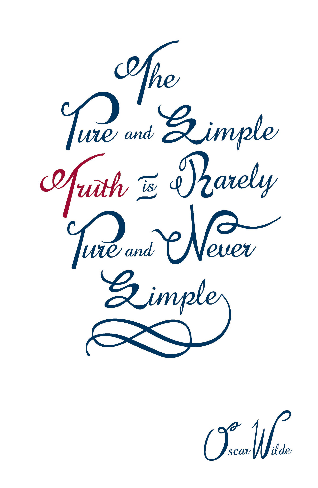

Tools Used : Hands-on, Illustrator
Graphic design is a kind of the visual language of everyday life, vitally present in everything from advertisements and film titles to packages for common household products.
A collage with a scrapped newspaper and described the new york city where we can typically feel busy or like the melting pot.
A strict discussion for our works and modified over and over again in the class til no modification in the summer 2016 of Parsons New School.
A quote from oscar wilde who was a prolific Irish writer who wrote plays, fiction, essays and poetry.